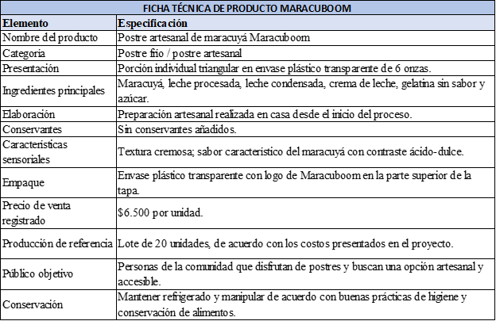
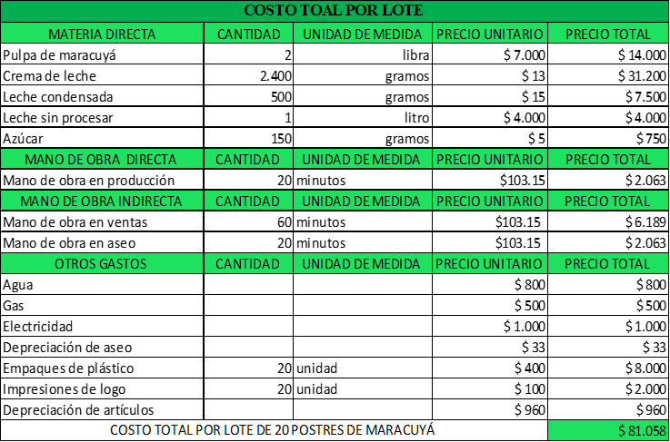

💰
Costo de producción
$4.500 COP por unidad.
Nuestra Creación
El balance ideal entre el dulce y la acidez natural del maracuyá, fusionando frescura y tradición.


Elaborado con pulpa de maracuyá, leche procesada, leche condensada, crema de leche, gelatina sin sabor y azúcar, en una porción individual de 80 g.
El balance ideal entre el dulce y la acidez natural del maracuyá, 100% fresco y sin conservantes artificiales, en un envase plástico transparente triangular de 8 oz.



Datos clave
$4.500 COP por unidad.
$6.500 COP al público por porción individual de 80 g.
Se elabora exactamente 24 horas antes de su comercialización y requiere refrigeración constante.